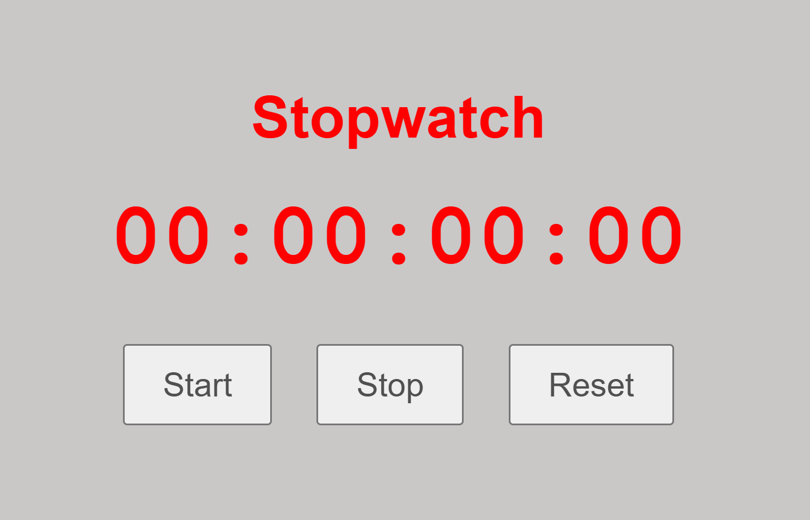
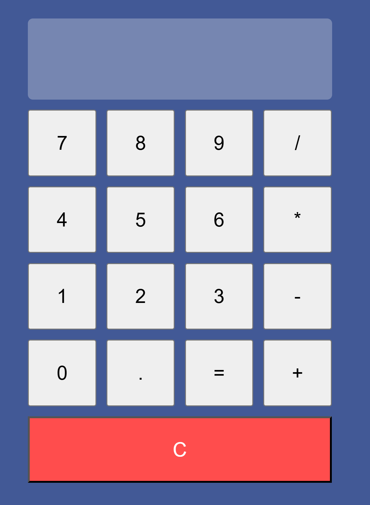
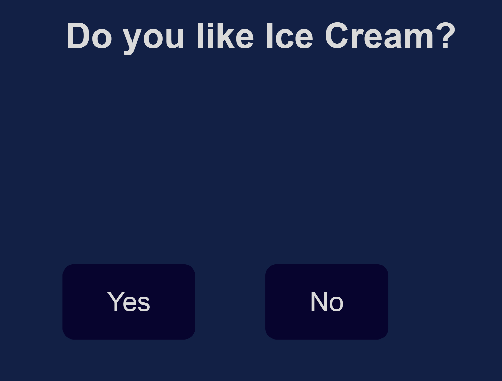
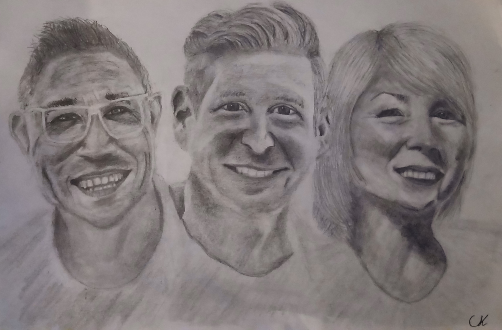
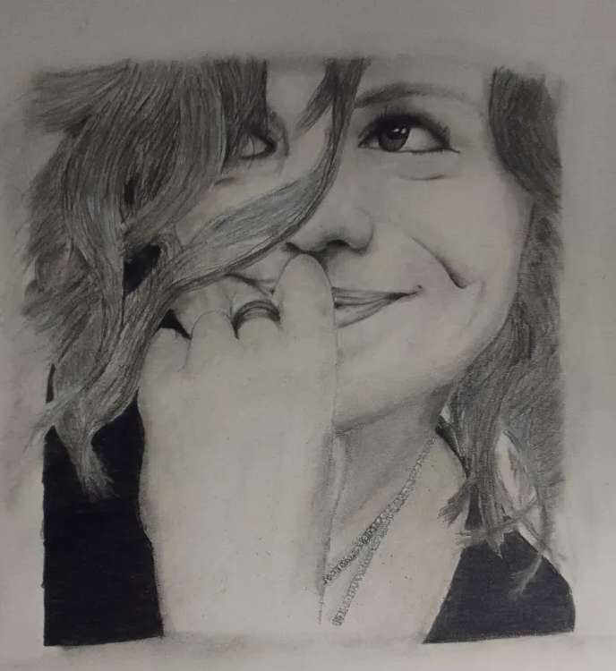
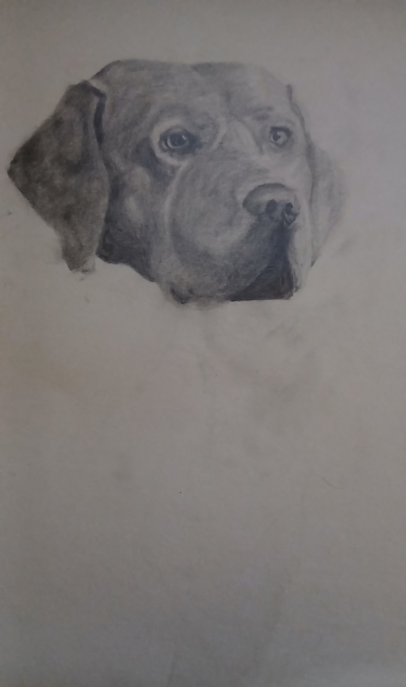
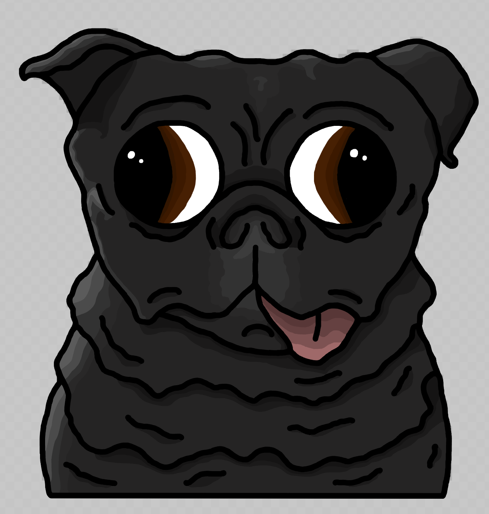
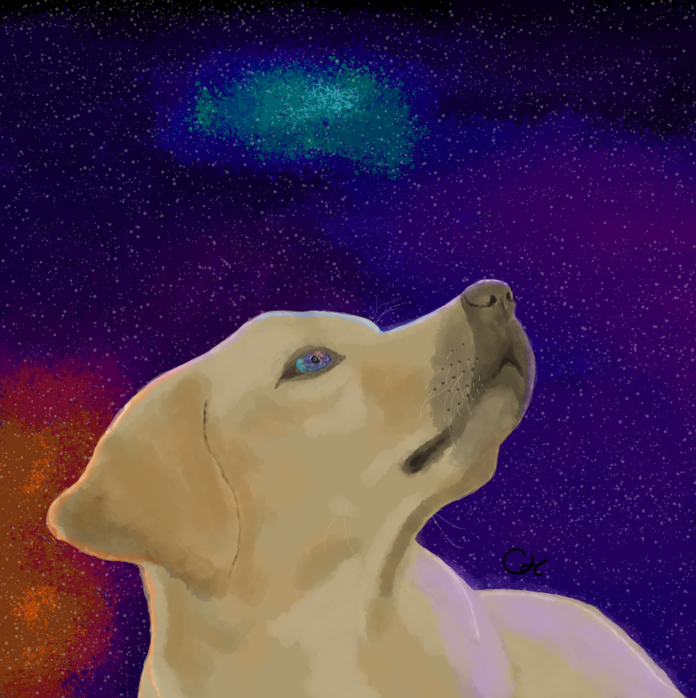
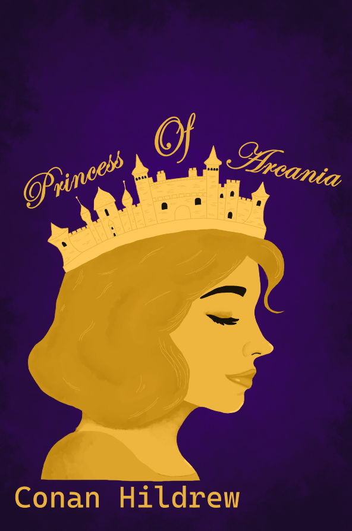

Projects
Coding Projects

Stopwatch

Calculator

Button Game
Art Projects

This is a drawing I made for the course leaders of The Falcons Hitz Programme I volunteered to make this drawing as a thank you for the amazing work they do in the community. .

This is a personal drawing of my friend that I made. She helped develop my artistic skills and inspired me to create more art.

This is a drawing of my old beloved dog Rusty. Rusty was a very loyal and wise dog, after his passing it inspired me to explore and develop myself more than I ever thought possible. The drawing is currently a work in progress.

This is a digital drawing of a mascot called Porgi that I created. Porgi is a cute pug based off of a real life pug named Murphy. Muphy is my neighbours dog who has a very goofy and cure personality. I plan to use Porgi as my main mascot for my future projects.

This is my first ever digital drawing of a dog staring at a beautiful sky. I was inspired to create this drawing after an old walk I had with my dog where I sat down and admired a very dark starry night sky.

This is a cover for a book I am writing. The book is about a princess who is trapped under royal oppression and is forced to marry a prince she does not love. The story follows her journey as she seeks freedom and to find her true love. It is currently a working progress.